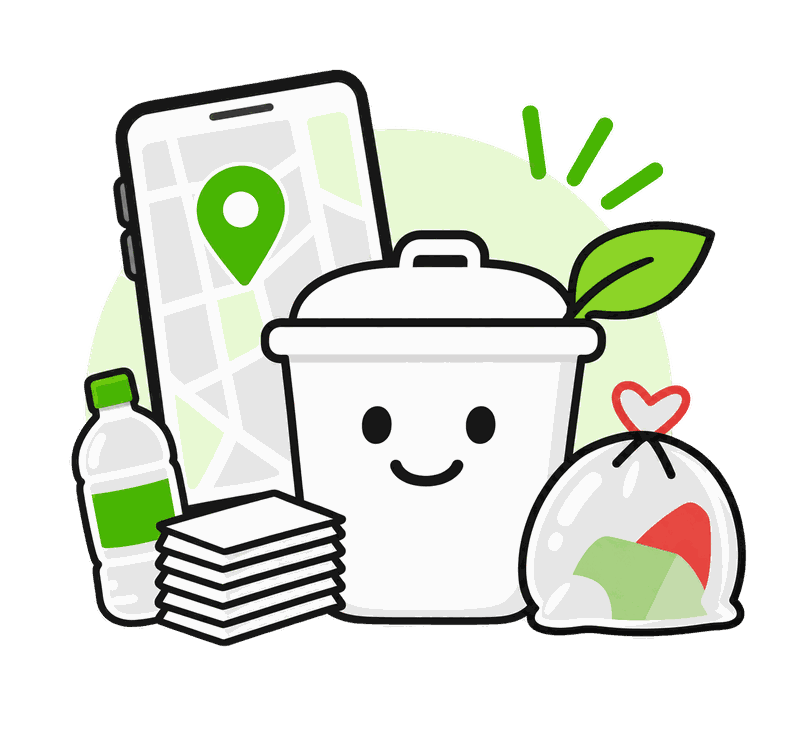
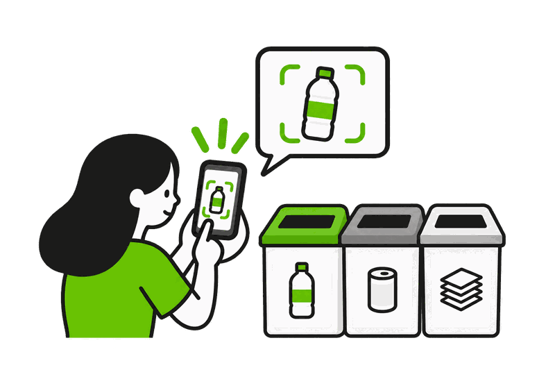
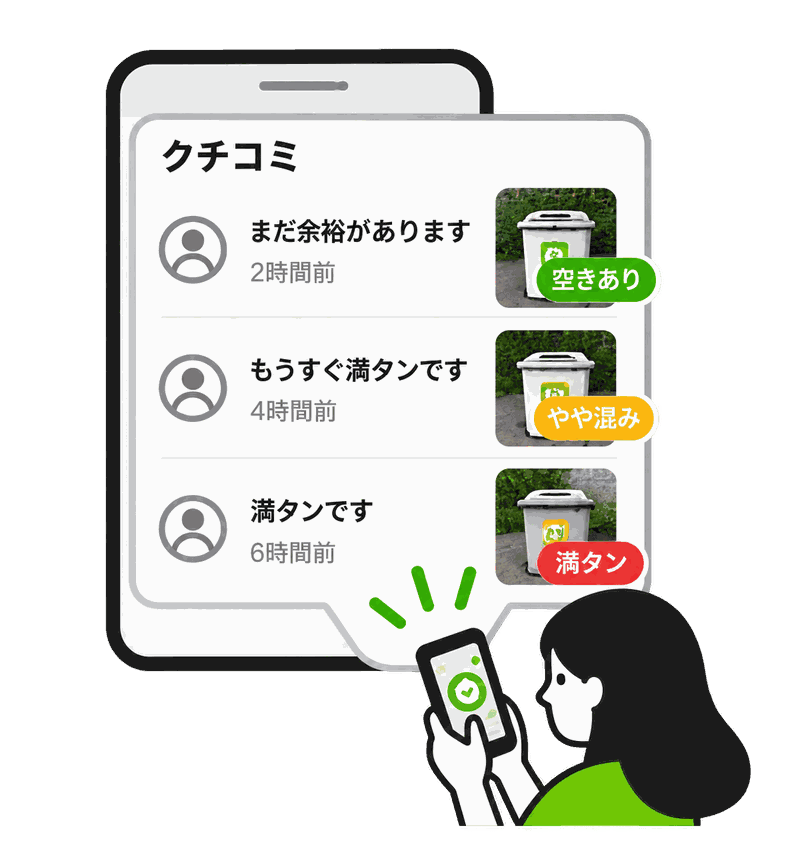
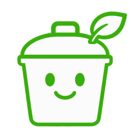
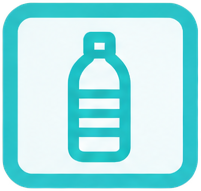
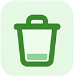
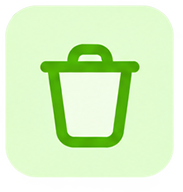

ごみをかんたんに
捨て場所を探せるアプリです。
画面をタップして次へ

ごみの写真を撮ると、
正しい分別方法と近くの
ごみ箱が見つかります。
画面をタップして次へ

みんなの投稿で、近くのごみ箱の
混み具合を確認できます。

ゴミナビ読める言語をお選びください。
ごみ全体が写るように撮影してください。
分類したいものを1つ選んでください。
ごみを検出できませんでした。
一度に1つのごみだけを、画面いっぱいに写してください。背景が多く写っていると判別できないことがあります。
以下のポイントを確認して、もう一度撮影してください。
撮影のポイント
こんな写真はNG

ペットボトル
資源ごみ
決められた回収日に、透明な袋に入れて出します。
捨て方
洗っていないペットボトルは収集されない場合があります。
周辺のごみ箱
京都駅前 分別ステーション
150m ・ 徒歩2分

空き 5分前に8人が利用しました対応ごみ
ご協力ありがとうございました！
みんなで街をきれいに保つ取り組みに、ご協力いただきありがとうございます。

京都駅前 分別ステーション
このごみ箱はどうでしたか？
ご協力ありがとうございます。
該当するごみが見つかりませんでした。
ごみの名前を変えて、もう一度お調べください。
分類情報を取得できませんでした。
もう一度お試しください。